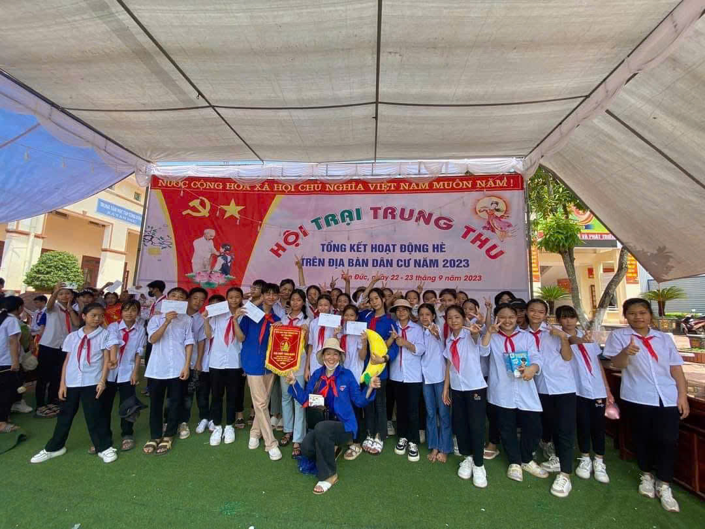
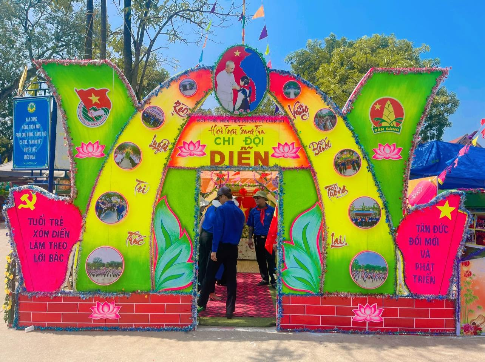
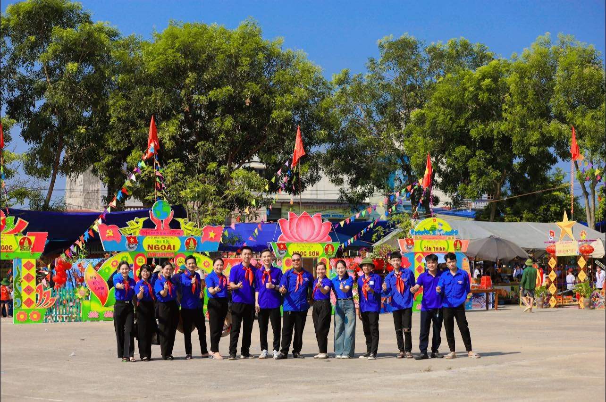
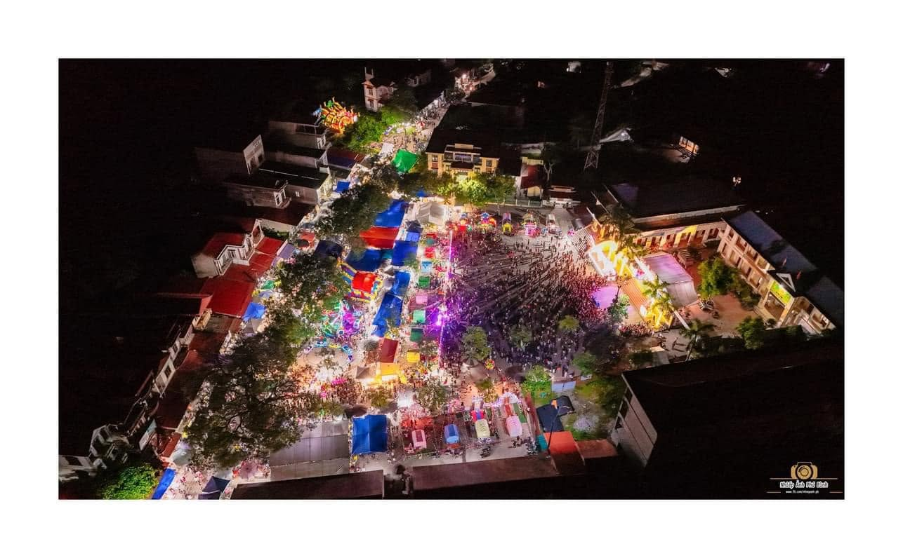

VỀ XÓM DIỄN
Xóm Diễn hôm nay được hình thành từ sự sáp nhập của xóm Diễn và xóm Diễn Cầu, thuộc xã Tân Đức cũ. Từ những con người vốn đã gắn bó với mảnh đất này, một cộng đồng mới tiếp tục được vun đắp bằng sự gần gũi, sẻ chia và tinh thần cùng nhau xây dựng quê hương.

Một nơi để nhớ, để kể và để kết nối
Trong hành trình ấy, đoàn viên, thanh niên là lực lượng trẻ luôn đồng hành trong các hoạt động tại địa phương. Từ tổ chức, hỗ trợ các chương trình dành cho thiếu nhi đến tham gia những hoạt động cộng đồng, màu áo thanh niên hiện diện như một phần của sức trẻ Xóm Diễn.
Đến với Hội trại Trung thu xã Kha Sơn năm nay, Xóm Diễn vinh dự đón 64 em thiếu nhi về sinh hoạt hè tại địa phương. Đây là dịp để các em được vui chơi, giao lưu, rèn luyện và cùng nhau tạo nên những kỷ niệm đẹp của tuổi thơ.
Từ những buổi sinh hoạt hè, những hoạt động Đoàn - Đội và những chương trình cộng đồng, các thế hệ trong Xóm Diễn có thêm cơ hội gặp gỡ, đồng hành và gắn kết. Người lớn góp kinh nghiệm, thanh niên góp sức trẻ, còn các em thiếu nhi mang đến tiếng cười và những ước mơ trong trẻo.
Mỗi người một vai trò, mỗi thế hệ một cách góp sức - cùng tạo nên một Xóm Diễn đoàn kết, trách nhiệm và luôn hướng về quê hương.
← VỀ TRANG CHỦGIÁ TRỊ ĐỊA PHƯƠNG

Văn hóa
Hội trại Trung thu: Đây là hoạt động mang tính tập thể rất mạnh mẽ tại các địa phương thuộc xã Kha Sơn. Các xóm sẽ cùng nhau dựng và trang trí những chiếc "Trại Thu" rực rỡ tại sân vận động hoặc nhà văn hóa, tạo sân chơi giao lưu cho các thế hệ trong xóm.

Con người
Con người vùng đất cách mạng nơi đây luôn tỏa sáng với lòng yêu nước nồng nàn và niềm tự hào sâu sắc về cội nguồn lịch sử. Gắn bó với cái nôi nông nghiệp bên dòng sông Cầu, họ nổi tiếng với phẩm chất cần cù, chịu thương chịu khó và luôn có ý thức tự lực vươn lên. Trong cuộc sống đời thường, người dân nơi đây giữ trọn lối sống mộc mạc, trọng tình nghĩa, hiếu khách và có tinh thần gắn kết cộng đồng, đoàn kết xóm giềng cực kỳ bền chặt. Sự đồng lòng này chính là bệ phóng giúp họ gìn giữ và trao truyền nguyên vẹn các giá trị văn hóa truyền thống qua nhiều thế hệ.

Ký ức
Việc gìn giữ những giá trị văn hóa truyền thống chính là chìa khóa vàng để lưu dấu ký ức và khẳng định bản sắc độc đáo của con người Kha Sơn qua bao thế hệ. Mỗi mùa trăng rằm náo nức hay nếp sống nghĩa tình được trao truyền đều trở thành sợi dây kết nối thiêng liêng giữa quá khứ và tương lai. Những ký ức sống động ấy là hành trang tinh thần vô giá, giúp người dân nơi đây tự hào bước tiếp mà không bao giờ lãng quên cội nguồn.